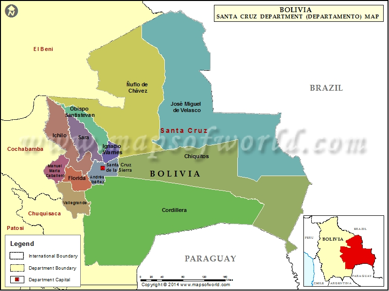

ARTICLE

Santa Cruz de la Sierra es el centro comercial de Bolivia y la ciudad capital del departamento de Santa Cruz. Se ubica sobre el río Piraí, en las zonas bajas tropicales al este de los Andes. La fundaron los españoles en el siglo XVI y actualmente es un núcleo cosmopolita con museos, restaurantes y discotecas. El casco histórico tiene en su centro la Catedral Metropolitana de ladrillo rosa en la Plaza 24 de septiembre, la plaza central